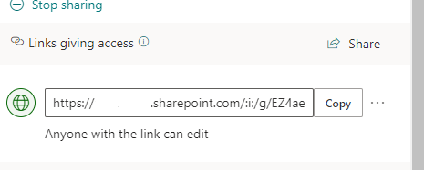

Export access shared links from SharePoint Library
Summary
Script will export SharePoint Library with access shared links files to CSV file.

Implementation
- Save script to support file "Export-LibraryFileSharedLinks.ps1"
- Open Windows PowerShell
- Change console path where file is saved
- Include following parameters "SiteUrl" (SharePoint url site ), "FolderName" (PnP:Library Name / CLI: Path to Library) and "ExportPath" for the export csv path parameter
- Press enter to execute line command
- CSV file will be saved at path defined in parameter "ExportPath"

# Example: .\Export-LibraryFileSharedLinks.ps1 -SiteUrl https://contoso.sharepoint.com -FolderName "Shared Documents" -ExportPath ".\file.csv"
[CmdletBinding()]
param(
[Parameter(Mandatory=$true,HelpMessage="Site Url")]
[String]$SiteUrl="https://contoso.sharepoint.com",
[Parameter(Mandatory=$true,HelpMessage="Library name")]
[String]$FolderName="Shared Documents",
[Parameter(Mandatory=$true,HelpMessage="Path were json content is exported")]
[String]$ExportPath=".\file.csv"
)
Begin {
#Log in to Microsoft 365
Write-Host "Connecting to Tenant" -f Yellow
Connect-PnPOnline -Url $SiteUrl -Interactive
$Ctx = Get-PnPContext
Write-Host "Connection Successful!" -f Green
}
Process{
$sharedlinksResults = @()
$count = 0
$allFiles = Get-PnPListItem -List $FolderName -PageSize 10 | Where-Object{$_.FileSystemObjectType -ne "Folder"}
$allFiles | foreach{
$item= $_
$SharingInfo = [Microsoft.SharePoint.Client.ObjectSharingInformation]::GetObjectSharingInformation($Ctx, $item, $false, $false, $false, $true, $true, $true, $true)
$file = [Microsoft.SharePoint.Client.File]$item.File
$ctx.Load($SharingInfo)
$ctx.Load($file)
$ctx.ExecuteQuery()
$SharingInfo.SharingLinks | Where-Object{$_.ShareTokenString -ne $null} | foreach {
Write-Host "Shared links in file '$($file.ServerRelativeUrl)'"
#Arrange object properties to better display content in csv
$_ | Add-Member -NotePropertyName "ServerRelativeUrl" -NotePropertyValue $file.ServerRelativeUrl
$sharedlinksResults += $_
}
$count += 1
#progress bar
Write-Progress -Activity 'Links giving access to files' -Status "Searching for links giving access to files in Library '$($FolderName)'... ($($count)/$($allFiles.Count))" -PercentComplete (($count / $allFiles.Count) * 100)
}
#Order columns for CSV exportation
$sharedlinksResults | select ServerRelativeUrl,Url,ShareTokenString,AllowsAnonymousAccess,ApplicationId,BlocksDownload,Created,CreatedBy,Description,Embeddable,Expiration,HasExternalGuestInvitees,Invitations,IsActive,IsAddressBarLink,IsCreateOnlyLink,IsDefault,IsEditLink,IsFormsLink,IsManageListLink,IsReviewLink,IsUnhealthy,LastModified,LastModifiedBy,LimitUseToApplication,LinkKind,PasswordLastModified,PasswordLastModifiedBy,RedeemedUsers,RequiresPassword,RestrictedShareMembership,Scope,ShareId,SharingLinkStatus,TrackLinkUsers | ConvertTo-Csv -NoTypeInformation | Out-File $ExportPath
Write-Host "Exported links giving access to files to path: '$($ExportPath)' with success!" -f Green
}
End {
Disconnect-PnPOnline
Write-Host "Finished" -ForegroundColor Green
}
Check out the PnP PowerShell to learn more at: https://aka.ms/pnp/powershell
The way you login into PnP PowerShell has changed please read PnP Management Shell EntraID app is deleted : what should I do ?
Contributors
| Author(s) |
|---|
| Andre Lage |
| Andre Lage |
Disclaimer
THESE SAMPLES ARE PROVIDED AS IS WITHOUT WARRANTY OF ANY KIND, EITHER EXPRESS OR IMPLIED, INCLUDING ANY IMPLIED WARRANTIES OF FITNESS FOR A PARTICULAR PURPOSE, MERCHANTABILITY, OR NON-INFRINGEMENT.